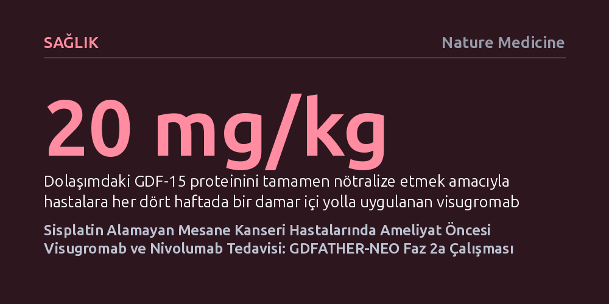

SAGLIK · Nature Medicine · 2026-10-25
GDFATHER-NEO faz 2a klinik çalışması, sisplatin alamayan mesane kanseri hastalarında visugromab ile nivolumab kombinasyonunun güvenliğini ve tümör yanıtını inceledi. Bulgular, bağışıklık baskılayıcı GDF-15 proteinini hedeflemenin ameliyat öncesi immünoterapi direncini kırmada uygulanabilir ve umut verici bir strateji olduğunu gösterdi.
Standart kemoterapiyi kaldıramayan mesane kanseri hastalarında, tümörün bağışıklık sisteminden kaçmasını sağlayan GDF-15 proteinini hedeflemenin cerrahi öncesi yeni ve etkili bir tedavi yolu açabileceğini gösteriyor.

Kasa invaziv mesane kanseri, mesane duvarının kas tabakasına sirayet eden ve hızla yayılma eğilimi gösteren agresif bir hastalıktır. Güncel kılavuzlar, mesanenin tamamen çıkarıldığı radikal cerrahi öncesinde sisplatin temelli kemoterapi uygulanmasını standart yaklaşım olarak önerir. Ancak klinik pratikte hastaların önemli bir bölümü; ileri yaş, böbrek fonksiyon bozukluğu, işitme kaybı ya da genel düşkünlük gibi nedenlerle sisplatini tolere edemez veya olası ağır toksisite nedeniyle bu tedaviyi reddeder. Cerrahi öncesinde etkili bir sistemik tedavi alamayan bu hastalar için güvenli ve tümörü geriletebilecek alternatif yaklaşımlara duyulan ihtiyaç uzun süredir onkolojinin en kritik başlıklarından biridir.
Son yıllarda PD-1 yolağını hedefleyen nivolumab gibi bağışıklık kontrol noktası inhibitörleri mesane kanserinde önemli adımlar sağlasa da tek başlarına uygulandıklarında hastaların yalnızca bir kısmında kalıcı yanıt oluşturabilmektedir. Bunun temel nedeni, tümör mikroçevresinin bağışıklık hücrelerinin içeri sızmasını ve tümörü yok etmesini engelleyen karmaşık savunma kalkanları kurmasıdır. Bu kalkanların merkezinde yer alan GDF-15 (Büyüme Farklılaşma Faktörü 15) proteini, tümör hücreleri tarafından yüksek düzeyde salgılanarak T hücrelerinin dokuya tutunmasını engeller ve bağışıklık sistemini işlevsiz kılar. GDFATHER-NEO araştırması, tam da bu direnç mekanizmasını kırmak üzere tasarlandı.
GDFATHER-NEO, sisplatin temelli kemoterapiye uygun olmayan veya bu tedaviyi kabul etmeyen, henüz uzak metastaz yapmamış (cT2–T4a N0 M0) mesane kanseri hastalarını kapsayan bir faz 2a klinik çalışmasıdır. Araştırmada hastalar, klinik tümör evresi (T2 ile T3–T4a) ve biyopsideki PD-L1 protein ifadesi (CPS 10 eşiği) dikkate alınarak dört farklı katmana ayrıldı. Katılımcıların her katman içinde dengeli dağılmasını sağlamak amacıyla sıralı bir dağıtımla hastalar körlenmiş olarak iki gruba ayrıldı: Bir kola yalnızca nivolumab ile plasebo verilirken, diğer kola nivolumab ile GDF-15 inhibitörü visugromab kombinasyonu uygulandı.
Tedavi şeması, dörder haftalık aralıklarla uygulanan toplam üç kürlük (12 haftalık) bir ameliyat öncesi neoadjuvan süreci kapsadı. Visugromab, dolaşımdaki GDF-15 proteinini tamamen nötralize etmek amacıyla 20 mg/kg dozunda damar içi infüzyonla verilirken, hemen ardından 480 mg nivolumab uygulandı. Tedavinin tamamlanmasının ardından hastalar radikal sistektomiye ya da organ koruyucu azami re-TURBT işlemine alındı. Çıkarılan cerrahi dokular, hem yerel patologlar hem de bağımsız merkezi inceleme kurulları tarafından kör bir biçimde analiz edilerek tedavinin patolojik etkinliği değerlendirildi.
Araştırmanın en ayırt edici yönü, visugromabın tümör mikroçevresinde yarattığı hücresel değişimi gelişmiş çoklu immünofloresan ve moleküler analizlerle takip etmesidir. Önceki temel bilim çalışmaları, tümör kökenli GDF-15'in T hücrelerinin damardan dokuya geçişinde hayati rol oynayan LFA-1 molekülünü bloke ettiğini göstermişti. Visugromab, bu proteine yüksek afiniteyle bağlanarak onu nötralize eder ve T hücrelerinin tümör yatağına yeniden akmasının önünü açar.
Çalışma kapsamında tedavi öncesindeki tanısal kazıma biyopsileri ile ameliyat sonrası doku örnekleri karşılaştırıldı; tümör, stroma ve çevre dokulardaki bağışıklık hücresi yoğunlukları dijital patoloji algoritmalarıyla incelendi. Eş zamanlı olarak kanda CXCL9, CXCL10 ve interferon gama gibi bağışıklık aktivasyonunu gösteren sitokinlerin seviyeleri takip edildi. Bu translasyonel incelemeler, GDF-15'in engellenmesinin tümör içi bağışıklık baskısını kırarak anti-PD-1 tedavisinin gücünü hücresel düzeyde nasıl artırdığını aydınlatmayı hedefledi.
GDFATHER-NEO çalışması, birincil hedef olarak patolojik tam yanıtı—yani cerrahi dokuda mikroskobik düzeyde dahi hiç canlı kanser hücresi kalmaması durumunu—ve radyolojik yanıt oranlarını inceledi. İkincil hedefler arasında ise yan etki profili, cerrahi operasyonlarda herhangi bir gecikme yaşanıp yaşanmadığı, nükssüz sağkalım ve ilaca karşı antikor gelişimi yer aldı. Çalışmanın sonuçları, sisplatin alamayan bu hassas hasta grubunda kombine immünoterapinin güvenle uygulanabileceğini ve cerrahi zamanlamasını aksatmadığını gösterdi.
Bu faz 2a çalışması keşifsel nitelikte ve sınırlı sayıda katılımcıyla yürütülmüş olsa da, GDF-15 nötralizasyonunun immünoterapiye dirençli solid tümörlerde biyolojik olarak hedefe ulaştığını kanıtlamaktadır. Tümörün bağışıklık kalkanını çift koldan kırmayı amaçlayan bu yaklaşım, ilerleyen dönemde daha geniş hasta popülasyonlarında test edilerek mesane kanserinde hem ameliyat başarısını artıracak hem de organ koruyucu stratejilere zemin hazırlayacak yeni bir tedavi standardının temellerini atmaktadır.